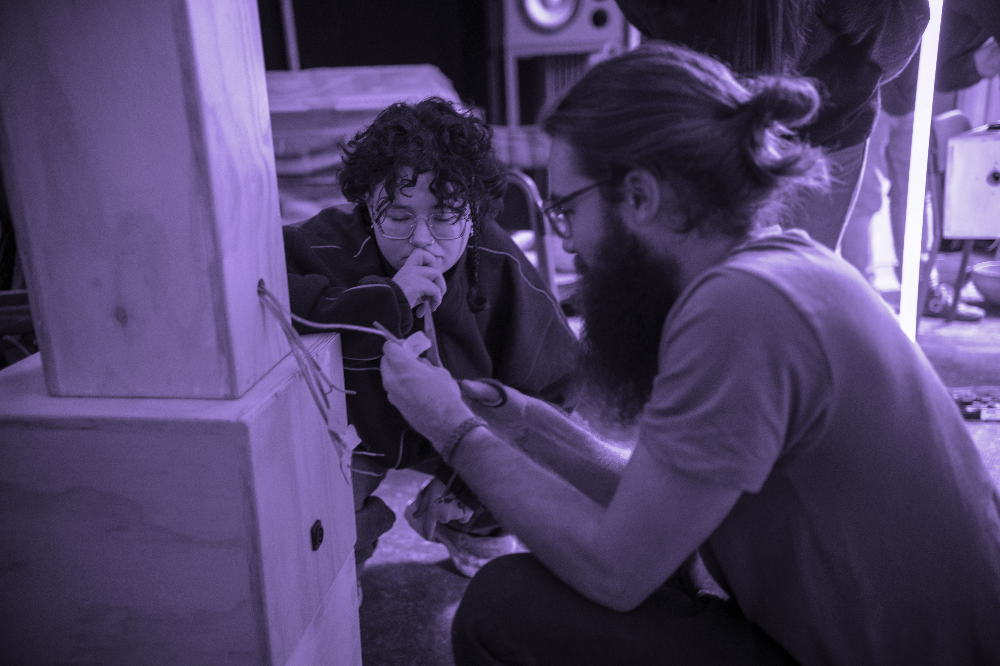

Systems
Acousmonium


During a study trip to Milan, we collaborated with Audior Milano on the design and construction of an acousmonium. The process included acoustic calculations, selecting and assembling speaker components, and building the individual loudspeaker cabinets.
Following the construction of the system, I composed Splinters, a piece created specifically for spatial performance on the acousmonium. The composition explores the distribution and movement of sound across the different loudspeakers and their individual sonic characteristics.
The version presented here is a stereo mix of the original multichannel composition.
Coding
Website Development
This website was designed and developed from scratch using HTML, CSS and JavaScript. I created the structure, visual design, interactions and responsive layout myself as part of my coding and creative practice.
Weather Sound
This Python-driven Raspberry Pi project transforms weather data into sound. The system can receive weather data either from physical sensors or through a weather API. Parameters are mapped to musical parameters and processed by an algorithm that generates sound from the incoming data. The result is a sonification of the weather.
In the installation version, visitors can enter the name of a city. When using the API mode, the system retrieves the current weather data for that location and translates it into sound in real time.

Digital Playground
The Digital Playground is a collection of small snippets and playful gadgets I coded while exploring creative coding ideas. They do not necessarily serve a larger purpose—they are simply experiments, curious interactions and ideas I found fun to make.
I used the first two tools, Sine & Cosine and Koch Curve, to better understand the mathematics and algorithms behind them and to visualise them in a presentation.